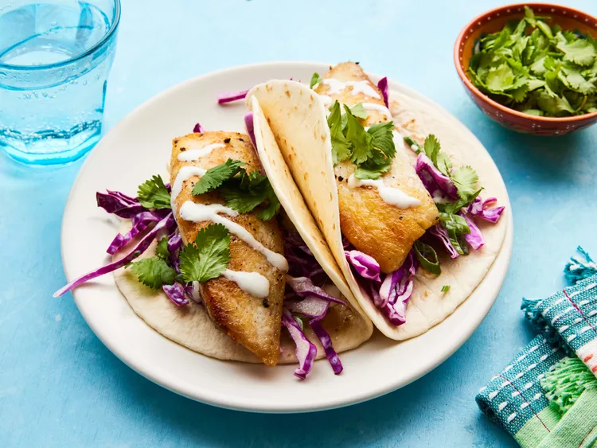

Fish Tacos

Description
These fresh and zesty fish tacos are easy to make and perfect for a quick and flavorful meal. Enjoy them with your favorite toppings.
Ingridients
- 4 white fish fillets (like cod or tilapia)
- 8 small tortillas
- 1 cup shredded cabbage
- 1/2 cup sour cream
- 1 lime (juiced)
- Salt and pepper to taste
- Olive oil
Preparation
- Season the fish fillets with salt and pepper.
- Heat olive oil in a pan and cook the fish fillets for 3-4 minutes on each side until cooked through.
- Warm the tortillas in a separate pan.
- Assemble the tacos by placing the fish, shredded cabbage, and a dollop of sour cream on each tortilla.
- Drizzle lime juice on top and serve immediately.